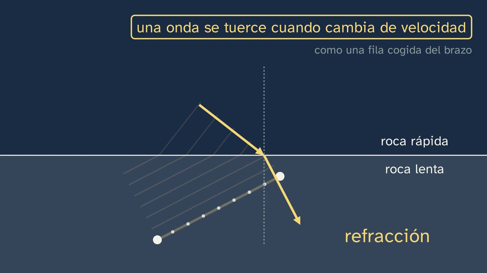
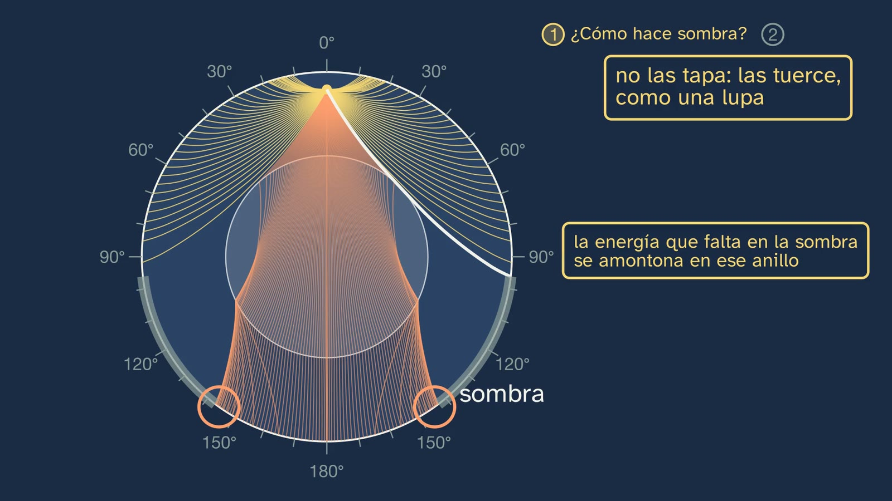
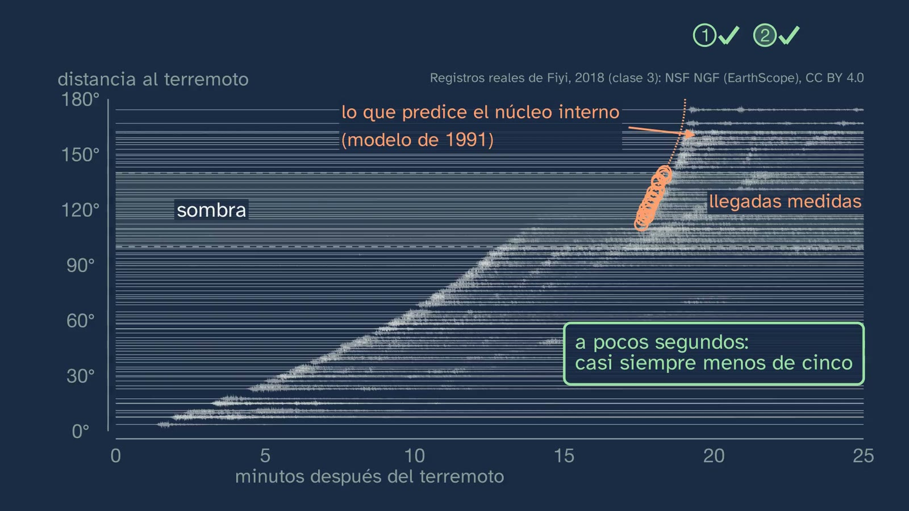
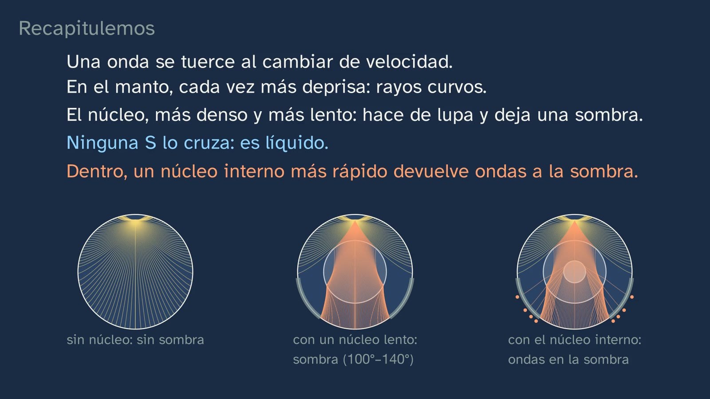

What was in the shadow
In a nutshell
This is the class that solves the two puzzles of class 3. In the seismograms of the 2018 Fiji earthquake, the direct P wave faded out at around 100° and left a ring of shadow up to about 140°; but the waves crossed the core, and inside the shadow, from about 115°, some arrived that should not have been there. The class's question is twofold: how can something the waves pass through cast a shadow, and what were those waves?
The answer starts with a single idea: a wave bends when it changes speed. The class teaches it with a calculated wavefront that slows down first on one side, reads Snell's law without calculations and takes it home with a spoon in a glass. Then it uses it three times. With Mohorovičić (1909–1910), a wave that takes a detour through faster rock arrives first: that is the Moho. In the mantle, rock that gets faster and faster curves the rays, and an Earth made all of mantle would have no shadow. In the core, the P goes from 13.7 to 8 km/s: the rays that enter bend towards the centre, as in a magnifying glass, and between about 100° and 140° none lands. The shadow emerges on its own from a calculation with the Earth's measured speeds, right where students saw it in the data, and the missing energy piles up past 140°, where in Fiji it arrived about eight times stronger. Oldham (1906) and Gutenberg (1912) follow, and with them the promise made in class 2 is kept (how we know that the core takes up a sixth of the volume); then the S shadow and the liquid core, with the independent evidence of the Earth tides (Jeffreys, 1926); and the mistake "denser, faster", taken apart with the data from the core boundary, which is denser and slower at the same time.
The second half belongs to Inge Lehmann. With the Buller earthquake (New Zealand, 1929) and Soviet stations inside the shadow, and with a straight-ray model that she chose so that she could do the calculations by hand, in 1936 she proposed a faster inner core that bends some rays outwards and sends them back into the shadow. The class checks it with the data: the curve predicted by a 1991 model passes through the measured arrivals from Fiji, in 2018, and in Toledo, almost at the antipodes of New Zealand, the first wave from an earthquake there has crossed the inner core about 140 km from the centre of the Earth. To close: her caution, what she did not say (that it was solid), her life, told alongside what was expected of her, what she chose and how she was treated, and a reflection: how we come to know what no one will ever see.
Objective. By the end, students will be able to explain with refraction why there are shadow zones, what Oldham, Mohorovičić and Gutenberg deduced from the waves, and Jeffreys from the tides, and how Inge Lehmann discovered the inner core.
What this sheet adds:
- the nuances the voice does not mention: why the shadow in the fan of rays is not the textbook's, what Oldham really read, why Irkutsk is not named, what Lehmann did not fully explain, the level of Snell's law and the names of the waves (P′, PKP, PKIKP);
- the mistakes to expect;
- the solutions to everything;
- an activity of about 20–25 minutes that no textbook offers: Lehmann's model, with ruler, compasses and calculator, in which students redo the tables of her 1936 paper, which is openly available, and check their numbers against hers;
- the set-up of the torch and the glass for the lab, with its safety notes;
- open resources to go further, among them Lehmann's original paper, the page of the 1929 seismological summary where Toledo logs the Buller earthquake, and animations and viewers in the browser.
The words. The class says perpendicular where many textbooks say normal (3:24), and boundary where the textbook says discontinuity (the voice links them at 5:09). Refraction is the change of direction of a wave when it changes speed (2:52). Phases are the arrivals of the waves (16:50). The names of the waves, which the voice avoids:
- P′ ("P prime", Lehmann's title) was in 1936 the name of the P waves that cross the core; today they are called PKP (Lehmann, 1987, caption of figure 3: "P′ (now PKP)"). In today's notation, each letter is a leg of the path: P in the mantle, K in the outer core, I in the inner core.
- The wave Lehmann called P′₃ is the one now called PKIKP, the one that also passes through the inner core (Bolt, 1997, p. 295). Her P′₁ and P′₂ are the two branches of the PKP.
- PKiKP is the one that bounces off the boundary of the inner core; Pdiff, the P that goes around the core; PP, the one that bounces once off the surface (6:58); SKS, the S that crosses the core converted into a P (9:01).
- Mohorovičić's two arrivals are now called Pg (the one that travels through the crust) and Pn (the one that travels along the top of the mantle) (Department of Geophysics, University of Zagreb).
For readers outside Spain: the Bachillerato is the last two years of secondary school (ages 16–18), and ESO is the compulsory stage before it (ages 12–16). The video is in Spanish, with English subtitles; the images on this sheet come from the video and keep their Spanish text. In Spain the decimal separator is a comma (13,7 means 13.7); this English sheet uses points. The board writes the sine as sen, its Spanish abbreviation; this sheet writes sin.
Curriculum
Spain's Royal Decree 243/2022, Biology, Geology and Environmental Sciences, consolidated text in the Official State Gazette, BOE (the lab's copy, checked for the topic sheet). Our translation of the official Spanish text. The minutes are those of the video.
| Element | What the decree says | Where the class works on it |
|---|---|---|
| Core knowledge (block D, "The Earth's dynamics and composition") | "Structure, composition and dynamics of the geosphere. Direct and indirect methods of study." | The seismic method explained from the inside: refraction (2:52 to 4:02), the Moho (4:36 to 5:09), the mantle (5:47), the core's shadow (6:25 to 8:23), the liquid core (9:01 to 10:23) and the inner core (11:28 to 13:45). And another indirect method, the Earth tides (9:37) |
| Core knowledge (block A, "Scientific project") | "Hypotheses, questions, problems and conjectures: framing them from a scientific perspective." | Three predictions (4:36, 6:25 and 12:18); Lehmann's hypothesis (12:57), her caution (14:27) and the prediction it dares to make (16:50) |
| Core knowledge (block A) | "Scientific work and the people devoted to science: contribution to the biological, geological and environmental sciences, and social importance. The role of women in science." | Inge Lehmann: the hook (2:10, 2:19), her work (11:50 to 12:57) and her life (15:21 to 16:10) |
| Core knowledge (block A) | "The historical evolution of scientific knowledge: science as a collective, interdisciplinary endeavour in continuous construction." | The chain of Oldham, Mohorovičić, Gutenberg, Jeffreys and Lehmann (4:36 to 14:27); the solid inner core, proposed by others and confirmed by the vibrations of the Earth (14:47); the reflections seen years later (16:50) |
| Specific competence 1 | "To interpret and communicate scientific information and data, arguing about them precisely and using different formats to analyse processes, methods, experiments or results of the biological, geological and environmental sciences." | Calculated rays and fronts (6:58), density and speed bars (10:23), a curve over real records (13:26) and a record with its clock (13:45) |
| Specific competence 2 | "To locate and use reliable sources, identifying, selecting and organising information, evaluating it critically and checking its truthfulness, in order to answer questions about the biological, geological and environmental sciences independently." | Every quotation, with its work and its page (2:19, 12:57, 14:27, 15:21, 16:50); in the activity, the original 1936 paper |
| Specific competence 3 | "To design, plan and carry out research projects following the steps of scientific methodologies […]." Its description asks students to "understand in depth the difference between an impression or opinion and evidence". | A model put to the test with data it did not know (13:26); what is hypothesis and what is evidence (14:27, 16:50) |
| Specific competence 4 | "To seek and use strategies to solve problems, critically analysing the solutions and answers found and reformulating the procedure if necessary, in order to explain phenomena related to the biological, geological and environmental sciences." | A model simplified on purpose (12:18) and reformulated in the face of data that do not fit (12:57) |
| Criterion 1.1 | "To critically analyse concepts and processes related to the subject's knowledge, interpreting information in different formats (models, graphs, tables, diagrams, formulas, schemes...)." | Reading Snell's law (3:24), the fan (6:58), the bars (10:23), the curve (13:26) and the Toledo record (13:45) |
| Criterion 2.3 | "To argue about the contribution of science to society and the work of the people devoted to it, highlighting the role of women and understanding research as a collective and interdisciplinary endeavour in constant evolution and influenced by the political context and economic resources." | Lehmann (15:21, 16:10), with the question "what does it take for someone to be able to use all their strengths?"; the network of stations between the wars (11:50) |
| Criterion 3.1 | "To ask questions, make predictions and formulate hypotheses that can be answered or tested using scientific methods and that attempt to explain biological, geological or environmental phenomena." | The bets at 4:36 and 6:25 and the hypothesis at 12:18 |
| Criterion 4.2 | "To critically analyse the solution to a problem about biological, geological or environmental phenomena and modify the procedures used or the conclusions reached if that solution is not viable or in the light of new data provided or gathered later." | Diffraction, ruled out; the two-layer model, replaced by a three-layer one (12:18, 12:57) |
The subject's introduction also says that it "seeks to stimulate a scientific vocation in students, especially in female students, to help put an end to the low number of women in positions of responsibility in research". Lehmann's biography (15:21, 16:10) goes along those lines, with data and without a verdict.
What this sheet's activity adds. Criterion 3.4, "To interpret and analyse the results obtained in a research project, using mathematical and technological tools when necessary, recognising their scope and limitations…": students calculate a model, find its shadow and say where it falls short. Criterion 4.1, "To solve problems or explain biological, geological or environmental processes, using varied resources such as one's own knowledge, data and information gathered, logical reasoning…". And 2.1, "locating and citing suitable sources": students check their numbers against the author's printed tables.
How the class is built
Video chapters
About twenty minutes, in thirteen chapters. It is a theory class: Nil is at his desk, without a lab coat. It follows the question in the title in two halves, one per puzzle, and each half ends with a test against real data. Nil appears on camera four times: in the greeting (0:00), with the hook (2:10), halfway (11:20) and in the goodbye (19:28).
| Part | What happens | Why this way |
|---|---|---|
| What we'll see (0:00) | The map of the topic, with the fourth class highlighted (0:04). | Knowing where you are. |
| What you already know (0:17) | How far did the direct P reach? Pause. Up to about 100°; the shadow ring and the two puzzles (0:33), which come back at the top as the class's route at the end of the hook (2:51). | Retrieving exactly what is solved today. |
| Solutions to the previous class (0:54) | All three, each with its question: about 49 times the Kola borehole; about 9 minutes at 60°; a station without a P may be in the shadow: the calculated fan of the P does not go beyond about 100°; and it is checked, because the P from a closer earthquake does reach it, and in its real record (Kabul, 119° from Fiji) other waves arrive later (0:54 to 1:41). | Closing what was pending without dragging it out. |
| A Sunday in Copenhagen (2:10) | A girl of 15 or 16 feels the floor move; her father: "It was an earthquake." Her name was Inge Lehmann, and in 1936 she discovered something no one has ever seen (2:19). | A hook with its context (when, where and who), and a person before a theory. |
| Why a wave bends (2:52) | The front that slows down first on one side, like a line of people arm in arm when the first ones step onto sand. Snell's law, read live (3:24). The spoon in the glass, to do at home (4:02). | The only idea needed, from scratch and with its reason why; the equation, read and not calculated (ADR-099). |
| Mohorovičić's race (4:36) | How can a wave that takes a detour arrive first? The race, with its clock: far away, the one that goes through faster rock wins, like the car that turns off to take the motorway; the Moho, at about 50 km (5:09). The mantle, faster and faster: curved rays; without a core, there would be no shadow (5:47). | The first application, the closest to us, and the Earth without a shadow as a counterfactual. |
| How the core casts a shadow (6:25) | The bet: A, B or C. The calculated fan of rays, with its front: the shadow emerges on its own (6:58). The magnifying glass: the missing energy piles up past 140°, as in the Fiji data (7:44). Oldham and Gutenberg, and the sixth of the volume from class 2 (8:23). | Predicting before seeing; the evidence, a calculation with the measured speeds. |
| The liquid core (9:01) | No S crosses it as an S; its shadow, much bigger. Stop and think (9:24). It is liquid, and the Earth tides confirm it by another route (9:37). The mistake "denser, faster", with the data from the boundary (10:23). Nil, halfway (11:20). | Two independent pieces of evidence, and the mistake, out in the open, taken apart with data. |
| What was in the shadow (11:28) | The second puzzle. Buller, 1929: the globe turns from New Zealand to Eurasia and the ring of its shadow appears, with the Soviet stations inside it (11:50). Her straight-ray model and the question (12:18). Her hypothesis: a faster inner core, with a magnifying glass over it to show how the rays bend (12:57). | Students think of a hypothesis first; then comes hers, in her own words. |
| The proof, in the data (13:26) | The curve of a 1991 model passes through the measured arrivals from Fiji, in 2018. Toledo, almost at the antipodes: twenty minutes of nothing and the wave that crossed the inner core (13:45). | How do we know?, with a prediction and with a Spanish station. |
| Who Inge Lehmann was (14:27) | Her caution; who accepted her idea. What she did not say (solid), today's size, Pluto and the three boundaries (14:47). Her life (15:21) and how she was treated, with a question (16:10). | The second typical mistake; the person, with data and without a verdict. |
| Seeing what no one will see (16:50) | Waves that do not fit, the simplest hypothesis, a prediction (reflections at its boundary) and its confirmation; her advice for reading the records. | Thinking about what it means to know something that cannot be seen (ADR-099). |
| Practice and keep thinking (17:36) | The summary, with the three sister Earths; three exercises (18:09); the open question (18:54); class 5 (19:18); the goodbye (19:28). | The solutions open class 5. |



Links with other subjects. Physics in year 2: "Image formation in media and objects with different refractive indices. Optical systems: thin lenses…" (block C), which is Snell's law with numbers and the magnifying glass. Mathematics I: "Calculation of lengths and angular measurements: use of trigonometry" (block B), which is the activity. Physics and Chemistry in year 4 of ESO: "Light and sound as waves that transfer energy". History of the Contemporary World: scientific cooperation between the wars, with stations in Greenland, Europe and the Soviet Union in a single Danish paper.
What students bring
- From ESO (Royal Decree 217/2022): the basic structure of the geosphere (years 1 to 3) and, in year 4, which is optional, its methods of study; the wave as an idea ("Light and sound as waves that transfer energy", Physics and Chemistry in year 4, also optional). That is why the class explains refraction from scratch (2:52).
- From class 2: the core takes up a sixth of the volume and holds a third of the mass, with a mean density of about 11 g/cm³; it is made of iron. 8:23, 10:23 and exercise 1 need it.
- From class 3: P and S waves, that the S does not pass through liquids, the Fiji record section, the shadow from about 100° to 140° and the waves that arrived inside it, from about 115°; the Toledo station (San Pablo de los Montes).
- From Mathematics, only for the activity: the sine of an angle and the calculator in degrees. Trigonometric ratios are in Mathematics B in year 4 of ESO ("Trigonometric ratios of an acute angle and their relationships") and in Mathematics I, which all students on the Science and Technology track take (article 11.1 of Royal Decree 243/2022). If they have not been covered yet, the activity has a route with a protractor.
Is Snell's law part of this year? With numbers, no: it belongs to Physics in year 2. The class uses it the way you read a law (3:24): what happens to the angle if the second rock is slower, if it is faster, if both have the same speed or if the wave arrives head-on. That is enough to understand the shadow, and it is what the exercises ask for. The calculations with sines are left for the activity, as an extension.
A plan for a 50-minute lesson
Designed so that students build Lehmann's model before seeing how she solved it: the problem before the explanation.
| Minutes | What to do |
|---|---|
| 0–2 | No video, with the worksheet: the questions in "Before watching". Everyone writes down their answer to the one about density: it is taken up again at minute (10:23). |
| 2–16 | Video from (0:00) to (12:18) (if the solutions to class 3 have already been corrected, skip from (0:54) to (2:10)). At the pauses at (6:25) and (9:24), answers aloud. Stop at the question at (12:18): "What would you put inside the core?". |
| 16–38 | The activity "Lehmann's model, with ruler, compasses and calculator", in groups (see below). |
| 38–47 | Video from (12:57) to (16:50). Does the groups' hypothesis match hers? At (16:10), the question, in pairs, for one minute. |
| 47–50 | Video from (17:36) to the end. The exercises and the open question, for homework. |
If time is short, the whole video in class, with its stops (about 23 minutes), and the activity in another session, as a review before class 5. Or only its first part (the model's shadow, 12 minutes).
Notes for teachers
Which fan of rays is drawn, and why its shadow is not the textbook's. The rays at (6:58) are calculated with the iasp91 model (Kennett and Engdahl, 1991), which comes from thousands of measured arrival times, and checked with TauP (at the same distance, the times differ by less than a hundredth of a second). But for the first puzzle the fan is drawn without the inner core: until (11:28) the class talks about a uniform core, and the inner core is the answer to the second puzzle. With the focus at 600 km, Fiji's:
- the direct P reaches up to 96.2° (98.4° with the focus at the surface);
- without an inner core, no ray lands between 96.2° and 142.9°;
- with the inner core, the PKIKP comes back into the shadow from 112.8° (113.7° with the focus at the surface): this is the "present-day" fan at (12:57).
The textbooks give other figures: the USGS, 104° to 140°; EarthScope, 103° to 143°; Gutenberg (1913), no P between 108° and 140°. They come from ray drawings, with foci at the surface and edges that in the data are not a sharp line. The voice rounds it to "roughly from a hundred to a hundred and forty degrees" (17:36), and that is fine: there is no single figure. It is the same nuance as in class 3.
The magnifying glass, with its numbers. The core is a sphere where the P travels more slowly, like the glass of a magnifying glass, and it does the same: it bends the rays inwards and brings them together. As it is not a perfect lens, it does not bring them together at a point but on a ring, which is called a caustic: at 142.9° with the focus at 600 km and at 144.6° at the surface (Houard and others, 1993, place it at around 144.5°). The rays that leave the focus between 10.2° and 10.8° from the vertical all land less than a tenth of a degree from 144.6°. In the Fiji data, between 143° and 151°, the median strength is 127 µm/s, and inside the shadow, between 113° and 143°, 16: 7.96 times, "about eight" (7:44). The voice says that "the energy missing from the shadow piles up in that ring": it is a good way of putting it, with one nuance. That energy is spread beyond 143°, all the way to the antipodes, and is concentrated above all next to the caustic.
Why the P slows down in the core, with the numbers. The speed of the P depends on two resistances of the material, to being compressed and to being deformed sideways, divided by its density. At the core boundary (PREM model):
- the resistance to compression hardly changes: from 6.6 to 6.4 × 10¹¹ Pa;
- the resistance to sideways deformation goes from 2.9 × 10¹¹ Pa to zero, because the core is liquid;
- the density rises from 5.57 to 9.90 g/cm³ (× 1.78).
Both things slow the P down almost equally. If only the density changed, the P would go from 13.7 to about 10.3 km/s; if only the rigidity were lost, to about 10.8; with both, to 8.1 km/s. The voice says it without formulas (10:23); the formula, vp² = (K + 4/3 μ)/ρ, is university level. And the S, which relies only on the resistance to sideways deformation, drops to zero.
Mohorovičić, with his figures (his 1910 paper, translated into English in Geofizika, 1992). The earthquake was on 8 October 1909, near Pokupsko, about 40 km south-east of Zagreb. Between 300 and 700 km from the epicentre, all the stations recorded two first arrivals of the P; up to 300 km, only one, and beyond 700 km, only the other (p. 23). His speeds: from 5.53 to 5.68 km/s in the upper layer and 7.747 below; he got a thickness of 54 or 49 km and chose "the round depth of 50 km" (pp. 33–34). With his numbers (focus at 25 km), the detour wave overtakes the direct one at about 181 km, and is about 6 s ahead at 300 km and about 25 s ahead at 700 km; in his tables, the observed lead was about 7 s at 300 km and 18 to 20 s between 520 and 700 km. That is why it is better not to say that "at 300 km the second overtakes the first": at 300 km it was already ahead. Today we know that the crust in that area is thinner than he calculated and that the focus was at about 14 km (Herak and Herak, 2010). The Moho beneath the Iberian Massif, the old basement of the west and centre of the peninsula, is at about 31 km (Mancilla and Díaz, 2015); beneath the Central System and the Iberian Range, at 33–35 km. The video does not say this: class 5 covers it, with the two kinds of crust.
Oldham got it right with much of his evidence wrong. The voice says that "some waves arrived much later than expected" (8:23), and it is faithful to his 1906 paper. What lies behind it:
- his main evidence was the second phase, the one he took to be the S wave, which beyond 130° arrived about 11 minutes late (p. 463);
- soon afterwards it was seen that much of that arrival was the SS, the S that bounces off the surface, which did not cross anything (Brush, 1980, quoted by Muir and Tsai, 2020);
- the P was also delayed, a little (p. 471), and he himself wrote that this change would have gone unnoticed without the one in the second phase;
- in 2020, Muir and Tsai showed with modern statistics that his P data, the ones he set aside, were enough to prove the core.
Moreover, Oldham did not say what the core was made of ("I do not propose to enter into speculative grounds", p. 472), nor that it was liquid: he preferred the S waves to cross it at half speed. His core, of 0.4 of the radius, would have its boundary at a depth of about 3,800 km; today, 2,891. It is an excellent story for competence 3: a correct conclusion with a partly wrong argument.
Gutenberg: 1912, even if the textbook says 1914. His calculation was presented at the session of the Göttingen Society of Sciences on 20 July 1912; it came out in summary in December 1913 and in full in 1914. He used the edge of the shadow, the arrival times and the strength of the waves, and tried 28 velocity distributions. He got a core of 3,480 km radius, the same one that the PREM model gives today, with its boundary at about 2,900 km (today, 2,891). Nor did he say that the core was liquid: his model had S waves inside. So if a textbook says that the Gutenberg discontinuity "marks the beginning of the molten material", what it says is true, but it was not Gutenberg who discovered it.
Jeffreys and the tides, with his numbers. In the 1920s, the fact that S waves did not cross the core was not enough: the core could be a liquid, or a solid that swallowed the S waves before they got across. Jeffreys wrote as much (The Earth, 1929, pp. 130–131), and the deciding fact was another one (p. 239):
- with a core as rigid as the mantle, the Earth would stretch with the tides as indicated by the number h = 0.364;
- with a liquid core, h = 0.667;
- today h ≈ 0.61 is measured (IERS conventions, 2010): the Earth yields about 1.7 times what it would yield with a rigid core.
He also used the wobble of the Earth's axis, which takes 14 months and not 10. That is why the voice says "two different routes, the same conclusion" (9:37). The ground rises and falls by up to about 30–40 cm twice a day (International Association of Geodesy).
The S and the core. "None crosses the core as an S wave" (9:01) is exact: in the outer core the speed of the S is zero. What reaches the core is not entirely lost: part of it bounces back (ScS) and another part crosses it converted into a P and becomes an S again on the way out (SKS). Beyond the shadow of the direct S, which begins at around 97–99°, those waves arrive, along with the ones that bounce off the surface (SS). S waves inside the inner core (PKJKP) have been searched for for decades: detections have been announced, and disputed, since 1972, and in 2018 a group found them by correlating records from stations all over the world (Tkalčić and Phạm, Science). The firm evidence that the inner core is solid is not those waves, but the vibrations of the whole Earth (Dziewonski and Gilbert, 1971).
Lehmann's paper, from the inside. "P′" (1936), 29 pages in English, is complete and openly available on the website of the Geological Survey of Denmark and Greenland (see "Open resources"). What is worth knowing:
- The data. The Buller (Murchison) earthquake, on 16 June 1929 in universal time (the 17th in New Zealand), with her own readings of records from Europe, Greenland and the Soviet Union. At first she used the published readings; later she preferred to read the records herself, borrowed or in copies (Lehmann, 1987, p. 34).
- The model, "for the purpose of illustrating the characteristics of the P and P′ curves" (p. 87): a mantle at 10 km/s and a core at 8 km/s with a radius 5/9 of the Earth's (about 3,540 km), with straight rays. It leaves a band without rays from 112.5° to 153.9° (p. 90), the one on the board at (12:18). It is wider and farther away than the real one because straight rays do not curve in the mantle: the ray that grazes the core comes out at 112.5° instead of at around 98°.
- The hypothesis (p. 97): an inner core of 0.2205 radii, about 1,405 km, where the P travels at 8.6 km/s. The Royal Society memoir (Bolt, 1997, p. 295) gives 10 km/s: it is a misprint by Bolt.
- What she did not fully explain. In her model, the rays that enter the inner core come back into the shadow from 118.8° (p. 98), and she had seen arrivals "down to about 105°" (p. 93). The same happens in the Fiji data: there is clear energy between 105° and 113° (at Kurchatov, Kazakhstan, at 112.2°, 10.6 µm/s), before where today's PKIKP begins. Those arrivals are attributed to the part that bounces off the inner core and to diffraction at its edge. She herself wrote that the data were "quite insufficient" (p. 115).
- The idea came from earlier. In a letter to Jeffreys of 31 May 1932 she was already suggesting that those waves could be explained "by a discontinuity surface within the core at which the velocity increases" (facsimile in Hjortenberg, 2009, pp. 687–688).
- Who accepted it, and how. Gutenberg and Richter (1938), as a rapid but continuous increase in speed, without a sharp boundary, because they saw no reflections. Jeffreys (1939), with the sharp boundary. The sharp reflections were identified in 1970 (Engdahl, Flinn and Romney): that is the prediction at (16:50).
- Solid. It was proposed by Birch (1940), who imagined an inner core "frozen" inside a molten one, and by Bullen (1946); it was confirmed in 1971 by the vibrations of the whole Earth. In 1936 Lehmann did not say it. In 1987, when it was already known, she did write "a small solid core" (Lehmann, 1987, p. 35); that is why the voice specifies "in her paper of nineteen thirty-six" (14:47).
- Refraction, not reflection. What she called P′₃, the main wave in her argument, crosses the inner core and bends (today, PKIKP). Reflections at its boundary exist, but they are the small part. In 1987 she summed it up by speaking of reflection, and many tell it that way; better not to reinforce it.
Why the voice does not name Irkutsk. The best-known figure in the paper shows the records from Irkutsk (110.8°) and Sverdlovsk (135.0°). The class names Sverdlovsk, Tashkent and Baku, between 124° and 137°, for two reasons. Lehmann doubted the Irkutsk reading: "The Irkutsk reading is very early […] the interpretation seems to be erroneous" (p. 113). And at 110.8° today's PKIKP has not yet arrived; it begins at around 113.7° with a focus at the surface: what arrives there is the part that bounces off the inner core or the part that is diffracted. If a student brings that figure, it makes a good question.
The curve over the Fiji data, with its numbers (13:26). The arrivals on the board have been measured again for this class, with a statistical criterion (Akaike's) on the 17 Fiji records between 113° and 143°. They start a median of 1.4 s from the iasp91 curve (half of them, between −0.1 and +4.5 s); 14 of the 17, less than 5 s away: "almost always less than five". The three that go over (from 5.4 to 9.3 s) are weak arrivals: the Fiji earthquake started weakly and its strong jolt came a few seconds later, and the method sometimes marks that jolt. The important thing is that the model is from 1991 and the earthquake from 2018: it is a prediction, not a fit. Beware of the table in the class 3 activity: its times for the "core wave" between 113° and 143° came out about 15 s before the real onset, because the program was marking the edge of its search window. For that band, use the ones in this note.
Toledo, with its numbers (13:45). The station is IU.PAB, of the Global Seismographic Network, at San Pablo de los Montes. The earthquake is the East Cape one, about 180 km north-east of Gisborne (New Zealand): 4 March 2021 at 13:27:35 universal time (the 5th in New Zealand), magnitude 7.3 and 10 km deep. It is 176.4° from Toledo. In the model, the PKIKP arrives at 1,209.97 s, 20 min 10 s, and in the record it begins 1.2 s later; before that, only noise (0.015 µm/s). The ray passes 139 km from the centre of the Earth. The other branch, the PKP that does not enter the inner core, can be seen about 100 s later. Three details:
- It is not the Kermadec earthquake of class 3, although it was on the same day: that one, of magnitude 8.1, was at 19:28, six hours later.
- The antipodes, with the Iberian Peninsula: Toledo's fall in the Manawatū district, on the North Island; Wellington's, in Alaejos (Valladolid); A Coruña is about 85 km from Christchurch's.
- In 1929 Toledo saw it too. In the International Seismological Summary for 1929 (p. 260), Toledo, 176.6° from the Buller earthquake, logs the arrival of the P at 20 min 16 s after the origin time given by the summary, along with seven other Spanish stations, from Barcelona to San Fernando. It is the same wave Lehmann was studying, seen from here.
Lehmann's life: what the voice says, with its nuances.
- The earthquake of her youth (2:10, 2:19): the words are her own (Lehmann, 1987, p. 33). She says "at home", nothing more; that it was in Copenhagen is deduced from the fact that she lived there (Bolt, 1997, p. 287). It is not known which earthquake it was.
- The school: Hanna Adler's, the first co-educational school in Copenhagen (not "in Denmark", as some sources say). The sentence about boys and girls is her own, quoted by Bolt (1997, p. 287). In the 1906 photo (2:19, 15:21) she is seated on the right; according to Jacobsen (2022), it was the first year group in which the girls graduated on equal terms with the boys.
- Cambridge and her father (15:21): she was at Newnham College in 1910–1911 and came home in December 1911, exhausted. In March 1912 her father refused to pay for her return, with the idea, widespread at the time, that intellectual effort damaged women's health (Jacobsen, 2022, p. 87). A nuance the voice does not mention, in fairness to him: about two weeks later he suggested that she recover at home, continue in Copenhagen and, if after a year her health and her exams were going well, he would pay for another year in Cambridge (Jacobsen, 2022, pp. 87–88). She did not go back.
- Six years of calculations (1912–1918), as a computing assistant at an insurance company, not as a qualified actuary. She went back to university in 1918 and graduated in 1920. In 1928 she did not take a doctorate: she did a master's degree in Geodesy (magisterkonferens); she never had an ordinary doctorate, and received two honoris causa doctorates.
- "Almost alone": she wrote that she studied seismology "unaided", but she also spent a month with Gutenberg in 1927 (Lehmann, 1987, p. 34).
- The only seismologist in the country, from 1928 to 1953 (16:10): these are her words on receiving the Bowie Medal, "I was the only Danish seismologist for 25 years" (quoted in Hjortenberg, 2009, p. 692).
- The 1952 chair: she was not given it (Jacobsen, 2022, p. 90). Why is not documented; versions circulate that could not be checked, and the class does not go into them.
- The Bowie Medal (1971): she was the first woman to receive it; the second, Susan Solomon, in 2007 (official list of the American Geophysical Union).
- The context, with figures for both women and men: in 1912, in Copenhagen's Faculty of Mathematical Sciences there were 22 women and 124 men (Jacobsen, 2022, p. 85).
- Testimonies that circulate: that she kept her cards in oatmeal boxes, or that she complained about how many incompetent men she had had to put up with, were told by a relative, Nils Groes, after her death, and the second sentence exists in several different versions (Bolt, 1997, p. 297). If they come up in class, they are presented as testimonies, not as facts.
"Try it yourself" and the one for keen makers. The spoon always works if the glass is smooth and transparent, the spoon leans to one side and you look at it from the side, through the glass: with a 7 cm glass, the submerged part looks shifted by 3 to 10 mm and somewhat thicker. If the spoon points towards the viewer, the jump disappears: that is why "turn the glass" is the control (4:02). With a cut, coloured or embossed glass, it does not work. The shadow with the torch is more delicate (a dark room, a smooth glass, the torch well aimed), and that is why it is "for keen makers", in the video description and in a labelled simulation (7:44). Its set-up for the lab is at the end of the activity.



Typical mistakes and how they are handled
With an honest caveat: we know of no study that has measured them with Spanish Bachillerato students. The third is anticipated by the topic sheet; the others, by the design of the class and by a review of widely watched popular-science videos carried out to prepare it, in which the first two came up often.
- "The denser a rock is, the faster waves travel." The class raises it and takes it apart with the data from the core boundary (10:23): denser and slower at the same time. The question in "Before watching" brings it into the open beforehand. If anyone insists that "denser means more rigid", it is often true within the same kind of rock; what matters is rigidity compared with density, and a liquid has no sideways rigidity.
- "Lehmann discovered that the inner core is solid." The screen and the voice cross it out (14:47). She proposed an inner core where waves travel faster; that it is solid was proposed by Birch (1940) and Bullen (1946), and confirmed by the vibrations of the whole Earth (1971).
- "If S waves don't get through, the core must be hollow", or "the shadow is cast by an opaque core". The P crosses it (6:58), and what the S needs and does not find is rigidity, not matter (9:37, 10:23). The magnifying glass (7:44) takes it apart completely: the core does not block, it bends.
- "The waves Lehmann saw bounced off the inner core." The main thing is that they cross it and bend outwards (12:57); the reflections are the prediction that was confirmed in 1970 (16:50). It helps to ask students to draw it.
- "Nothing reaches the shadow zone." This is the class 3 mistake, and it comes back here in another form: "in between, no ray lands" (6:58) holds for a uniform core; the real Earth has an inner core, and waves do arrive (11:28). It is worth stressing the change of model.
- "Seismic rays travel in straight lines." In the mantle they curve (5:47). Lehmann's were straight on purpose, so that the calculations could be done by hand (12:18), and that is why her shadow starts at 112.5° and not at about 98°. Simplifying is not being wrong if you know what you are simplifying.
- "The wave bends because it changes material", or "because the density changes". It bends because it changes speed: with two different rocks at the same speed, it does not bend (3:24).
- Snell's law, misread: the angle is measured from the boundary, or "the sine entre the speed" is understood as an angle between two things (in Spanish, entre means both "divided by" and "between"). The angle is measured from the perpendicular, and what is divided is its sine (3:24).
Questions and solutions
In the video
- How far did the direct P wave reach? (0:17; the pause, with a countdown). Up to about 100° from the earthquake; in the model, 96° with the Fiji focus, at 600 km. What will come up: "up to 140°", confusing the end of the shadow with the end of the P.
- How can a wave that takes a detour arrive first? (4:36; a silence to think). Because part of its path is through faster rock: what it gains in speed makes up for the detour, and the farther away the station, the more it gains. With Mohorovičić's figures (5.6 against 7.75 km/s, the boundary at 50 km), the detour wave overtakes the direct one at about 181 km. What will come up: "because it's shorter" (no: it is longer); "because it's another, faster wave" (it is the same wave, by another path).
- Place your bet: they cross it without bending, they all bounce back, or they bend towards the centre (6:25; the pause, with a countdown). C: they enter a slower medium, move closer to the perpendicular, and in a sphere the perpendicular points to the centre. A ray that reaches the boundary at 60° from the perpendicular continues at 30.4°. A would only hold if the speeds were equal or if the ray arrived head-on. B has some truth in it: a small part bounces back (the PcP wave), but almost all of it enters.
- If no S wave crosses the core, what does that tell us about it? (9:24; the pause, with a countdown). That it is liquid, at least on the outside: a liquid does not pull back to recover its shape, and the S needs that pull. What will come up: "that it's hollow" (mistake 3) or "that it's very hard". Criterion: the answer should use how the S moves.
- What would you put inside the core to make some rays land in the shadow? (12:18; the pause, with a countdown). What Lehmann proposed: an inner core where the speed is higher, which bends the rays outwards (12:57). Other hypotheses are valid if they can be tested, and it is worth writing them down: something that reflects the waves, a speed that increases gradually towards the centre (what Gutenberg and Richter thought in 1938), a slower zone… For the discussion: how would we tell a sharp boundary from a gradual increase? A sharp boundary makes some waves bounce back; a gradual one does not. It was checked in 1970 (16:50). Criterion: the hypothesis should say what changes in the speed and which way the rays bend.
- What do you think it takes for someone to be able to use all their strengths? (16:10; a silence to think). An open question, with no textbook answer. Pointers to steer it without closing it: what the person contributes (determination, perseverance) and what others contribute (opportunities, resources, time, encouragement for what they do, recognition); which of these Lehmann lacked or had plenty of, with the data from 15:21 and 16:10; whether anyone today, girl or boy, lacks similar things, and which. The teacher moderates and does not give a verdict.

Practice (the solutions open class 5)
- In the second class you calculated that the core holds a third of the Earth's mass. Explain why that does not contradict the P wave travelling more slowly in the core than in the mantle. A third of the mass in a sixth of the volume means that the core is, on average, twice as dense as the Earth as a whole: (1/3) / (1/6) = 2, about 11 g/cm³ against 5.5 (with the PREM model, 10.99; the mantle and crust, 4.45). But a wave's speed is not governed by density: it depends on how much the material resists being deformed, compared with how dense it is. The outer core is liquid and does not resist being deformed sideways, and it is also very dense: for both reasons, the P slows down (from 13.7 to 8 km/s). There is no contradiction: it is the mistake "denser, faster" (10:23). Criteria: twice the mean density, properly deduced, and the speed explained with the resistance to deformation, not with density. What will come up: "it's denser, so it should be faster; the data must be wrong". It spaces practice with class 2.
- A wave passes from a rock where it travels at 6 km/s into another where it travels at 8 km/s. Say whether it moves closer to the perpendicular or away from it, and what would happen the other way round. It moves away from the perpendicular, because the second rock is faster. The other way round, from 8 to 6 km/s, it moves closer. With numbers, for those who want them: if it arrives at 30° from the perpendicular, it leaves at 41.8° (sin θ₂ = 8/6 × sin 30° = 0.667); the other way round, at 22.0° (sin θ₂ = 6/8 × 0.5 = 0.375). And a detail for anyone who tries large angles: from 6 to 8 km/s, from 48.6° on nothing passes into the second rock, because the wave bounces back entirely (total internal reflection). What will come up: "it moves closer, because it goes faster", the wrong way round. Going back to the line of people arm in arm (2:52) fixes it: the end that enters first now goes faster.
-
Put these discoveries in order of time and say what evidence each one used: the inner core, the Moho, the liquid core and the depth of the core.
- the Moho: 1909 earthquake, 1910 study (Mohorovičić); the same P wave arrived twice, and far away the one that went through faster rock won;
- the depth of the core: 1912, published in 1913–1914 (Gutenberg); the edge of the P shadow and the arrival times;
- the liquid core: 1926 (Jeffreys); the Earth tides, which fit a liquid core and not a rigid one, together with the fact that the S does not cross it;
- the inner core: 1936 (Lehmann); the P′ waves that arrived inside the shadow.
Criteria: the order, and one piece of evidence properly stated for each. What will come up: the liquid core attributed to Gutenberg or Oldham; the inner core, "solid", attributed to Lehmann. If anyone adds Oldham (1906, the core), all the better: he is the first in the chain.
From the student worksheet
- Before watching. The spoon looks broken or bent right at the surface of the water, because light changes direction when it passes from the water into the air. The class 3 shadow went from about 100° to about 140°, and inside it, from about 115°, waves arrived that had crossed the core. The prediction about the wave and the one about density are predictions: what matters is each student's reason why, and the density one is taken up again at 10:23.
- While you watch the video. These are the stop-and-think questions above, in the order of the video, and a few more:
- the wave bends because the end of the front that enters the slow rock first slows down, and the other is still going fast;
- Snell's law: if the second rock is slower, the angle with the perpendicular gets smaller; if it is faster, bigger; with equal speeds, or if it arrives head-on, it does not bend;
- the spoon does not break: it is the light coming from it that bends;
- Mohorovičić put the boundary at about 50 km; today it is called the Mohorovičić discontinuity, or Moho;
- in the mantle the rays curve because speed increases with depth (pressure squeezes the rock and makes it more rigid); if the whole Earth were mantle, there would be no shadow;
- the core casts a shadow because it bends the rays towards the centre and sends them out beyond about 140°; like a magnifying glass, it brings them together there, and that is why in Fiji they arrived about eight times stronger;
- Oldham proposed a core of about four tenths of the radius; Gutenberg calculated its depth, about 2,900 km; the radius of the core is a little more than half that of the Earth, and 0.55³ ≈ 0.17, a sixth of the volume;
- the S shadow is bigger because no S crosses the core as an S: it begins at around 100° and reaches the antipodes;
- Jeffreys looked at the Earth tides: the Earth stretches more than it would with a rigid core; it is independent evidence because it does not use waves;
- at the core boundary the density almost doubles and the P slows down: denser and slower;
- Lehmann studied the Buller earthquake (New Zealand, 1929); Sverdlovsk, Tashkent and Baku, inside the shadow, had received a wave that had crossed the core; she used straight rays so that she could do the calculations by hand; before her, they were thought to be diffracted waves;
- her hypothesis: a faster inner core, which bends the rays outwards; "P′" was the name of the waves that cross the core;
- the curve is a prediction because the model is from 1991 and the earthquake from 2018;
- the first wave reaches Toledo by the almost straight path through the centre, and takes about 20 minutes;
- she did not say it was solid: others proposed it from 1940 on, and it was confirmed in 1971 by the vibrations of the whole Earth;
- what no one sees is known through a hypothesis that makes predictions: the reflections at the boundary of the inner core, seen years later.
- The activity, "Try it yourself" and the one for keen makers: their solutions, in "A classroom activity".
Keep thinking. Others had already seen those waves inside the shadow, and had looked for another explanation for them. Today, the records of thousands of seismometers are public: anyone can download them. What do you think they still hide? (18:54; the pause, with a countdown). It has no textbook answer, and neither the video nor this sheet gives one. Some pointers to steer the discussion without closing it:
- Seeing is not the same as understanding. In 1913 Gutenberg had already seen "very weak waves" between 108° and 140° (Physikalische Zeitschrift, p. 1217), and he labelled them "diffracted waves?", with a question mark (Hjortenberg, 2009, p. 684; Lehmann, 1987, p. 35). What did Lehmann do differently? She read the records herself, with her advice not to see the phases where they are expected to be (16:50).
- There are recent examples. S waves that would cross the inner core were searched for for decades in records that already existed, and in 2018 they were announced by correlating records from stations all over the world (Tkalčić and Phạm, Science). How much data does it take to see something like that?
- In the class's own data there is something that does not quite fit: the energy that arrives between 105° and 113°, before where the wave that crosses the inner core begins (see the note on Lehmann). How would you put an explanation to the test?
- The teacher moderates and does not give a verdict; what counts is the argument, with an example that can be checked.
A classroom activity
Lehmann's model, with ruler, compasses and calculator (about 20–25 minutes, in groups of three or four). Students redo the calculations of her 1936 paper, find the empty band of her model, put the inner-core hypothesis to the test and check their numbers against the author's printed tables. No one else offers this: the paper is openly available, and its tables are the kind that can be redone with a Bachillerato calculator. It works on criteria 1.1, 2.1, 3.1, 3.4, 4.1 and 4.2. It works best before watching (12:57), stopping the video at the question at (12:18).
Materials:
- the student worksheet, with the formulas and the table to fill in;
- a scientific calculator in degrees (or a spreadsheet);
- compasses, protractor and ruler; a sheet of A4 or, better, A3;
- on the board, a large circle with its centre and a scale of degrees, to put together the results of all the groups;
- if possible, projected, pages 89, 90 and 98 of Lehmann's paper (see "Open resources").
The model, in one sentence: a mantle where the P travels at 10 km/s and a core of 5/9 of the Earth's radius where it travels at 8 km/s; the rays are straight and only bend at the core boundary, following Snell's law. If the Earth is drawn with a 9 cm radius, the core measures exactly 5 cm, and the inner core of the second part, 2 cm.
The formulas, with the notation of her paper (pp. 88–89 and 97). i₀ is the angle at which the ray leaves the focus, measured from the vertical; i₁, the angle with the perpendicular on reaching the core; i₂, inside the core:
- sin i₁ = (9/5) × sin i₀ (the ray, seen from the core, which is 5/9 of the Earth);
- sin i₂ = (8/10) × sin i₁ (Snell's law, from 10 to 8 km/s);
- the ray that does not reach the core comes out at Δ = 180° − 2 × i₀ from the focus;
- the one that crosses it comes out at Δ = 2 × (i₁ − i₀) + (180° − 2 × i₂): two stretches of mantle, of i₁ − i₀ degrees each as seen from the centre, and a stretch of core of 180° − 2 × i₂;
- if it comes out at more than 180°, the ray has gone past to the other side: its distance is 360° − Δ.
With the inner core (radius 0.2205, at 8.6 km/s), two more angles, i₃ outside its boundary and i₄ inside:
- sin i₃ = 2.52 × sin i₂ (because (5/9) / 0.2205 = 2.52);
- sin i₄ = (8.6/8) × sin i₃;
- the ray that crosses it comes out at Δ = 2 × (i₁ − i₀) + 2 × (i₃ − i₂) + (180° − 2 × i₄);
- if sin i₄ comes out greater than 1, the calculator gives an error: it is not an error, it means that the ray cannot enter and bounces back entirely. It comes out at Δ = 2 × (i₁ − i₀) + 2 × (i₃ − i₂).
The steps:
- The drawing and the grazing ray (3 minutes). With the compasses, the Earth (9 cm) and the core (5 cm), with the same centre; the focus at the top. At what angle does the ray that grazes the core leave? sin i₀ = 5/9, i₀ = 33.75°. It is drawn with the protractor and the ruler, and where it comes out is measured from the centre: 112.5°. All the less steep rays, up to 180° − 2 × 33.75°, are the direct P.
- The rays that cross the core (8 minutes). One example worked out together (i₀ = 30°), another half-done (i₀ = 20°) and then each group calculates three or four rows of the table and checks each one against Lehmann's. For anyone who wants to draw one: at the point where the ray touches the core, the radius is the perpendicular; inside, the ray makes an angle i₂ with it, and on the way out everything is symmetrical.
- The empty band (3 minutes). Each group marks its arrivals on the circle on the board. Where does no ray land? Where do they pile up?
- The hypothesis (6 minutes). The inner core is added. Each group calculates one or two rows of the second table. Where do they land? What happens with i₀ = 15°?
- Conclude (3–5 minutes). Does the inner core explain the waves in the shadow? Why is the band of her model not that of the real Earth (from about 98° to 145° without an inner core)? What is such a simple model good for?
What to expect. The ray that grazes the core leaves with i₀ = 33.75° and arrives at 112.5°; drawn, it measures between 111° and 114°. The worksheet's half-done example (i₀ = 20°): sin i₂ = 0.4925, i₂ = 29.51°, core 120.99°, Δ = 157.0°. The table for the model without an inner core, recalculated for this sheet and compared with Lehmann's Table I (pp. 89–90):
| i₀ | i₁ | i₂ | mantle, i₁ − i₀ | core, 180° − 2i₂ | Δ | Lehmann, 1936 |
|---|---|---|---|---|---|---|
| 33 | 78.6 | 51.7 | 45.6 | 76.7 | 167.9 | 167.9 |
| 32 | 72.5 | 49.7 | 40.5 | 80.5 | 161.6 | 161.6 |
| 31 | 68.0 | 47.9 | 37.0 | 84.3 | 158.2 | 158.2 |
| 30 | 64.2 | 46.1 | 34.2 | 87.9 | 156.2 | 156.2 |
| 29 | 60.8 | 44.3 | 31.8 | 91.4 | 155.0 | 155.0 |
| 28 | 57.7 | 42.5 | 29.7 | 94.9 | 154.3 | 154.3 |
| 27 | 54.8 | 40.8 | 27.8 | 98.4 | 154.0 | 154.0 |
| 26 | 52.1 | 39.1 | 26.1 | 101.7 | 153.9 | 153.9 |
| 25 | 49.5 | 37.5 | 24.5 | 105.0 | 154.1 | 154.1 |
| 24 | 47.1 | 35.9 | 23.1 | 108.3 | 154.4 | 154.4 |
| 22 | 42.4 | 32.6 | 20.4 | 114.7 | 155.5 | 155.5 |
| 20 | 38.0 | 29.5 | 18.0 | 121.0 | 157.0 | 157.0 |
| 16 | 29.7 | 23.4 | 13.7 | 133.2 | 160.7 | 160.7 |
| 14 | 25.8 | 20.4 | 11.8 | 139.2 | 162.9 | 163.0 |
| 12 | 22.0 | 17.4 | 10.0 | 145.2 | 165.1 | 165.1 |
| 8 | 14.5 | 11.6 | 6.5 | 156.9 | 169.9 | 169.9 |
| 4 | 7.2 | 5.8 | 3.2 | 168.5 | 174.9 | 174.9 |
| 2 | 3.6 | 2.9 | 1.6 | 174.2 | 177.4 | 177.6 |
| 0 | 0 | 0 | 0 | 180.0 | 180.0 | 180.0 |
- The empty band: from 112.5° to 153.9°, as on her page 90. The rays that cross the core never come out at less than 153.9°: they come down to there (i₀ around 26°) and then move away again. Lehmann called the branch with i₀ between 33.75° and about 26° P′₂, and the one with smaller i₀, P′₁.
- The magnifying glass, in numbers: the rays that leave with i₀ between 23.8° and 28.4°, more than four degrees of departure angle, all land between 153.9° and 154.5°, within half a degree. In the mantle, four degrees of departure angle are spread over eight degrees of surface. It is the caustic of (7:44), in her model.
- The differences from her table: in four rows (i₀ = 14°, 7°, 2° and 1°) the calculator gives one or two tenths more or less than the printed figures; she calculated by hand. And if you round in the intermediate steps, the last digit can wobble by a tenth. It is a good opportunity to talk about rounding and about when a difference matters (it changes nothing in the conclusion).
- Near 33.75° the rays graze the core on the inside and come out beyond 180°: with i₀ = 33.75°, Δ = 186.2° (also in her table), that is, 173.8° from the focus on the other side. Better not to give it away until someone finds it.
With the inner core (compared with Lehmann's Table II, p. 98):
| i₀ | i₁ | i₂ | i₃ | i₄ | Δ | Lehmann, 1936 |
|---|---|---|---|---|---|---|
| 16 | 29.7 | 23.4 | 90 (grazes it) | — | 160.7 | 160.7 |
| 15 | 27.8 | 21.9 | 69.9 | does not exist: bounces back | 121.5 | 121.5 |
| 14.5 | 26.8 | 21.1 | 65.3 | 77.6 | 137.8 | — |
| 14 | 25.8 | 20.4 | 61.4 | 70.6 | 144.3 | 144.3 |
| 13 | 23.9 | 18.9 | 54.7 | 61.3 | 150.7 | 150.7 |
| 12 | 22.0 | 17.4 | 49.0 | 54.2 | 154.7 | 154.7 |
| 10 | 18.2 | 14.5 | 39.0 | 42.6 | 160.3 | 160.3 |
- The rays that leave with i₀ less than 16° touch the inner core: that is how she fixed its radius, 0.8 × sin 16° = 0.2205 (p. 97).
- Those that cross it with i₀ between about 12.2° and 14.86° land inside the empty band, between 118.8° and 153.9°: they were the waves that should not have been there.
- With i₀ between 14.86° and 16°, the ray cannot enter and bounces back entirely; almost all those rays also land in the band (with i₀ = 15°, at 121.5°). She called them "totally reflected" rays, and said they carried very little energy (p. 98). The calculator's "error" is physics.
- What it does not explain: her model sends waves back into the shadow from 118.8°, and she had seen arrivals down to about 105° (see the note). A simple model explains the main thing and leaves things out; she said so herself.
- Compared with the real Earth (iasp91 model, focus at the surface): the direct P reaches up to 98.4°, the shadow without an inner core would go up to 144.6°, and with it the PKIKP comes back from 113.7°. The differences come from the straight rays (in the real mantle they curve and come up earlier), from the size of her core (5/9 of the radius, about 3,540 km, against 3,480) and from her round speeds.
- What is a model like this good for? She said it herself: "for the purpose of illustrating the characteristics of the P and P′ curves" (p. 87). With it you can see the empty band, the piling up of rays and the fact that a faster inner core sends rays back into the shadow, with calculations done by hand. It does not try to get every number right; it tries to show what shape things have and what changes if you change a layer. That is what many models in science do.
Criteria: calculator in degrees; each step with its angle written down; the arrivals, marked on the circle; the conclusion supported by the table ("between 112.5° and 153.9° no ray lands; with the inner core, some do"), and the difference from the real Earth explained, not dismissed as a mistake.
What will come up: the calculator in radians (absurd distances); multiplying by 0.8 before multiplying by 9/5; forgetting the 2 for the two stretches of mantle; not subtracting from 360° when Δ goes over 180°; taking the calculator's error at i₀ = 15° for a mistake of their own.
To go further, the time–distance graph of her model. Her tables also give the times: the P arrives at 112.5° at 17 min 39 s; the P′, at 153.9°, at 23 min 16 s, and at 180°, at 24 min 11 s (without an inner core) or at 23 min 46 s (with it). With the times from the table, the graph has the same gap as the Fiji record section of class 3, wider and later, because the model's speeds are lower than the Earth's. The time of a ray that crosses the core, for anyone who wants to calculate it: t = 2 × R × (L/10 + (5/9) × cos i₂ / 8), with R = 6,370 km and L = cos i₀ − √((5/9)² − sin² i₀), the stretch of mantle in Earth radii.
Another option, in the lab: the shadow of the glass with the torch. It is the video's "for keen makers", set up in class.
- Materials: a smooth, transparent glass or a 500 ml beaker, filled with water almost to the top; a mobile phone torch; a light-coloured wall, an open book standing up or a white sheet of paper; a classroom that can be darkened.
- Set-up: the room dark; the glass less than a hand's span from the wall; the torch four fingers' width from the glass, at the height of the water (not above it, as the light would go through the empty part; nor at table level, as it would go through the bottom), pointing at the centre.
- What you see: on either side of the glass, two dark bands, 3 to 7 cm wide; outside them, the light from the torch; in the centre, a very bright line, which you have to look for by peering over the glass. On a sheet of paper on the table, looking from above, you see the whole pattern: a band of light with bright edges that closes to a point, and two dark wedges. The dark bands are the shadow; the bright edges, the caustic; the light that remains in the bands (from the room, reflections in the glass) plays the part of the weak waves that do reach the shadow.
- To measure angles: Earthlearningidea's activity 423 ("Shadowlands", in English) draws two circles on a sheet of paper, the glass's and another one twice the size, and puts the torch on the big one. In the class's simulation, with that set-up the direct light reaches up to 120° from the "epicentre", the shadow goes from 120° to 164° and the bright edge falls at 164°. On the Earth, 103° and 142°. The difference is that of Lehmann's straight rays: in air light does not curve, the glass is a cylinder and not a sphere, the speed jump from air to water (1.33) is not the one from mantle to core (1.7), and the glass has no inner core.
- What goes wrong: with the room light on, the bands almost disappear; with a cut or coloured glass, the pattern breaks up into stripes.
- What is best not to do: use the empty glass as "the shadow of the S". It lets through between 65% and 80% of the light, and its shadow is made of reflections in the glass; and covering it in black reinforces the idea of a core that blocks, which is mistake 3.
- Safety: with the lights off, a clear floor and moving calmly; the water kept away from sockets, computers and the phone itself, and if it spills, it is dried before going on; do not look straight into the torch light; if a glass breaks, the teacher picks it up. Like everything practical on the channel, it is proposed, not imposed.
"Try it yourself", at home or in class. The spoon in a smooth glass of water, leaning to one side and looked at from the side, with your eyes at the level of the water (4:02). What to expect: the spoon looks broken at the surface, and the lower part looks shifted and somewhat thicker; when the glass is turned until the spoon points towards the viewer, the break disappears. On the worksheet's last question: the spoon shows well that light bends when it changes speed; it cannot show a shadow or what happens in a sphere. Anyone who does not have a smooth glass to hand can see it in the real photo in the video.
Open resources
To keep working on what the class covers, all free. Links checked on 19/10/2026.
| Resource | What it offers | How to use it in class |
|---|---|---|
| "P′", by Inge Lehmann (1936), on the seismology papers page of the Geological Survey of Denmark and Greenland (GEUS) | The whole paper, scanned, in English: the model (p. 87), Tables I and II (pp. 89–90 and 98), the hypothesis (p. 97) and the cautious conclusion (p. 115). On the same page, other papers of hers and the 1930 booklet of her station | The activity: checking your own table against hers |
| Kölbl-Ebert (2001), "Inge Lehmann's paper: 'P′' (1936)", in Episodes | The key passages of the paper, with commentary by a historian of geology, in six pages. In English; open access, CC BY-NC | For teachers who want the paper explained |
| Jacobsen (2022), "Intellectually gifted but inherently fragile", in History of Geo- and Space Sciences | Her life up to 1930, with her letters: the school, Cambridge, her father, the 1928 post and the 1906 photo. In English; CC BY 4.0 | Criterion 2.3, with first-hand sources |
| Hjortenberg (2009), "Inge Lehmann's work materials and seismological epistolary archive", in Annals of Geophysics | Her working archive and her letters with Jeffreys, among them the 1932 one with the idea of the inner core, in facsimile. In English; open access, CC BY licence | Seeing a hypothesis being born four years before it was published |
| The 1930 booklet of the Copenhagen and Scoresbysund stations, from the Danish Geodetic Institute | Photos and a description of the Copenhagen station, in an old fortification, and of the Greenland one, when Lehmann was their seismologist. In English | How the work was done then |
| The International Seismological Summary, scanned by INGV | The readings of stations all over the world since 1918. In the April to June 1929 volume, page 260 lists the Buller earthquake at the most distant stations, Toledo and seven other Spanish ones included. Free non-commercial use, citing the reference given on the page | A 1929 document with a Spanish station, to read in class |
| Mohorovičić (1910), English translation in Geofizika 9 (1992) | The whole study of the 1909 earthquake, with its time curves. In English; open access, CC BY-NC 4.0 | The two arrivals, in the author's words (p. 23) |
| "Mohorovičić discontinuity", Department of Geophysics, University of Zagreb | The history of the discovery, told by the institution that keeps his legacy. In English (the address is http; some browsers show a warning) | A short read for teachers |
| "What is the Moho? How was it Discovered?", an EarthScope (IRIS) video on YouTube | The real 1909 seismograms, Mohorovičić's graph and its two branches. In English | For anyone who wants to see the 1909 records |
| Zonas de sombra sísmicas (seismic shadow zones), an EarthScope animation, in Spanish | The shadow of the P and that of the S, with their rays. CC BY 4.0 | A two-minute review |
| Seismic Shadow Zones vs Light Shadows, an EarthScope animation | The seismic shadow compared with the shadow of light: it is not completely dark, because reflected and deflected waves arrive. In English, with downloadable subtitles; CC BY 4.0 | Alongside the torch and the glass, and against the mistake "nothing reaches the shadow" |
| Seismic Waves Viewer, from EarthScope (its page) | The wavefronts of real earthquakes travelling through the inside of the Earth, in the browser, forwards, backwards and in slow motion. In English | Watching the P and S shadows form, in motion |
| "Shadowlands", Earthlearningidea activity 423 | The shadow with a glass and a torch, with two circles for measuring angles. In English; free to use in the classroom | The lab set-up, for measuring |
| Wilber 3, from EarthScope | The record search tool: the East Cape earthquake of 4/03/2021 and the IU.PAB station (San Pablo de los Montes), to view and download the class's Toledo record | Redoing 13:45 with the data |
| Global Seismogram Viewer, from EarthScope | Seismograms from all over the world, in order of distance, for earthquakes of magnitude 7 or more since 2010 (the East Cape one is 7.3) | Looking for the PKIKP at other almost antipodal stations |
| The East Cape earthquake in the USGS catalogue | Its page: time, place, depth and magnitude. In English | Placing the earthquake at 13:45 |
| TauP, from the University of South Carolina | The program that calculates the times and paths of waves in Earth models (iasp91, PREM…); the class's rays were checked with its Python version, inside ObsPy. Free (LGPL); needs Java | For teachers who want to calculate other rays |
| The shadow zone, a USGS video | Nine seconds of animation of the shadow, in the public domain. In English | Comparing a textbook drawing with the calculated fan at 6:58 |
What the class leaves out, and why
The class has one question, how the core casts a shadow and what was inside the shadow, and whatever does not answer it is left out, however good it is.
- Snell's law with numbers, the critical angle and total internal reflection. They belong to Physics in year 2; the class reads the law without calculations. They are in exercise 2, for anyone who wants them, and in the activity.
- Diffraction, how a wave bends around an edge. The class names it once, as the explanation Lehmann ruled out (12:18). It is year-2 physics.
- The velocity formulas (the resistances to compression and to sideways deformation, against density): the class says it in words (10:23); the numbers, in this sheet.
- The branches of the PKP and their names. The voice describes the waves by what they do; the names are in "The words".
- The whole curve of the PREM model, the mantle transition zone and the D″ layer: they belong to class 5, which divides the Earth in two ways. Here, only the jump at the core boundary.
- Why the inner core is solid although it is hotter than the outer core: it is the pressure, and it belongs to class 5.
- The other "Lehmann discontinuity". In the international literature, that name is used mostly for another boundary, about 220 km below the continents, which she also found (1959); and the "Gutenberg discontinuity" of today's papers is usually another one, at about 60–100 km. In Spanish textbooks, the names are those of the class. This sheet says so, in case anyone searches in English.
- The testimonies about her life (the oatmeal boxes, the "incompetent men") and the versions about the 1952 chair: they have not been checked as facts (see the note).
- Locating earthquakes, magnitude and intensity: topic 7.
Sources
- Royal Decree 243/2022, consolidated text (BOE): https://www.boe.es/buscar/act.php?id=BOE-A-2022-5521. ESO: Royal Decree 217/2022: https://www.boe.es/buscar/act.php?id=BOE-A-2022-4975.
- Lehmann, I. (1936). "P′". Publications du Bureau Central Séismologique International, Série A, Travaux Scientifiques 14, 87–115: the model (p. 87), Tables I and II (pp. 89–90 and 98), the arrivals "down to about 105°" (p. 93), the hypothesis (p. 97), Irkutsk (p. 113) and the conclusion (p. 115). Full scan at GEUS: https://seismologi.geus.dk/papers/lehmann-pmark.pdf. Extracts and commentary in M. Kölbl-Ebert (2001), Episodes 24(4), 262–267: https://doi.org/10.18814/epiiugs/2001/v24i4/007.
- Lehmann, I. (1987). "Seismology in the days of old". Eos 68(3), 33–35 (the earthquake of her youth, p. 33; reading the records herself and the month with Gutenberg, p. 34; the calculations of her model, "a very critical attitude" and "a small solid core", p. 35): https://doi.org/10.1029/EO068i003p00033-02.
- Bolt, B. A. (1997). "Inge Lehmann". Biographical Memoirs of Fellows of the Royal Society 43, 285–301 (the school, p. 287; Cambridge and her studies, p. 288; research was not her duty, p. 289; P′₃, p. 295; who accepted it and when, p. 296; the testimonies, p. 297): https://doi.org/10.1098/rsbm.1997.0016.
- Jacobsen, L. L. (2022). "Intellectually gifted but inherently fragile". History of Geo- and Space Sciences 13, 83–92, CC BY 4.0 (the school, p. 84; 22 women and 124 men in 1912, p. 85; Cambridge, p. 86; her father, pp. 87–88; the insurance company, p. 88; the 1928 letter, pp. 89–90; the 1952 chair, p. 90): https://hgss.copernicus.org/articles/13/83/2022/.
- Hjortenberg, E. (2009). "Inge Lehmann's work materials and seismological epistolary archive". Annals of Geophysics 52(6), 679–698 (Gutenberg's "diffracted waves", p. 684; she did not discover the "solid" core, p. 685; the 1932 letter, pp. 687–688; "the only Danish seismologist for 25 years", p. 692): https://doi.org/10.4401/ag-4625.
- American Geophysical Union, William Bowie Medal, list of recipients: https://www.agu.org/honors/bowie-medal/past-recipients.
- Oldham, R. D. (1906). "The constitution of the interior of the Earth, as revealed by earthquakes". Quarterly Journal of the Geological Society 62, 456–475 (pp. 463, 468, 470–472): https://archive.org/details/oldham-1906-quarterlyjournal-62190geol. Muir, J. B. and Tsai, V. C. (2020). "Did Oldham discover the core after all?". Seismological Research Letters 91, 1377–1383: https://doi.org/10.1785/0220190266.
- Mohorovičić, A. (1910). "Potres od 8. X. 1909"; English translation, "Earthquake of 8 October 1909", Geofizika 9 (1992), 3–55 (pp. 19, 23 and 32–38): https://ojs.srce.hr/index.php/geofizika/article/view/15978. Department of Geophysics, University of Zagreb, "Mohorovičić discontinuity": http://www.gfz.hr/sobe-en/discontinuity.htm. Herak, D. and Herak, M. (2010), Seismological Research Letters 81, 30–36 (the focus, at about 14 km).
- The Iberian Moho: Mancilla, F. and Díaz, J. (2015), Tectonophysics 663, doi:10.1016/j.tecto.2015.06.017; Díaz, J., Gallart, J. and Carbonell, R. (2016), Tectonophysics 692 (CSIC postprint): https://digital.csic.es/bitstream/10261/141082/4/Diaz_TECTO10945R1_Postprint-1.pdf.
- Gutenberg, B. (1913). Physikalische Zeitschrift 14, 1217–1218; and (1914), "Über Erdbebenwellen VII A", Nachrichten der Gesellschaft der Wissenschaften zu Göttingen, 125–176 (presented on 20/07/1912).
- Jeffreys, H. (1926). "The rigidity of the Earth's central core". Monthly Notices of the RAS, Geophysical Supplement 1, 371–383: https://doi.org/10.1111/j.1365-246X.1926.tb05385.x; and The Earth, 2nd ed. (1929), pp. 129–131 and 239. The tides: International Association of Geodesy, glossary, "Solid Earth Tides" (https://geodesy.science); IERS conventions (2010), ch. 7 (h₂ = 0.6078).
- What came later: Birch, F. (1940), American Journal of Science 238, 192–211, p. 211: https://doi.org/10.2475/ajs.238.3.192; Bullen, K. E. (1946), Nature 157, 405; Engdahl, E. R., Flinn, E. A. and Romney, C. F. (1970), Nature 228, 852–853; Dziewonski, A. M. and Gilbert, F. (1971), Nature 234, 465–466: https://doi.org/10.1038/234465a0; Tkalčić, H. and Phạm, T.-S. (2018), Science 362, 329–332: https://doi.org/10.1126/science.aau7649.
- The models: Kennett, B. L. N. and Engdahl, E. R. (1991), Geophysical Journal International 105, 429–465 (iasp91); Dziewonski, A. M. and Anderson, D. L. (1981), Physics of the Earth and Planetary Interiors 25, 297–356 (PREM); calculated with ObsPy and TauP: https://docs.obspy.org/. The caustic: Houard, S. and others (1993), Bulletin of the Seismological Society of America 83.
- The shadow in textbooks and online: USGS, The shadow zone: https://www.usgs.gov/media/videos/shadow-zone; EarthScope, Zonas de sombra sísmicas: https://www.iris.edu/hq/inclass/animation/310.
- The earthquakes, in the USGS catalogue: East Cape, 04/03/2021: https://earthquake.usgs.gov/earthquakes/eventpage/us7000dffl; Kermadec, 04/03/2021: https://earthquake.usgs.gov/earthquakes/eventpage/us7000dflf; Fiji, 19/08/2018: https://earthquake.usgs.gov/earthquakes/eventpage/us1000gcii. The Buller one (1929): GeoNet and the ISC bulletin (event 908150).
- International Seismological Summary for 1929, April, May, June (Oxford, 1933), p. 260; scan by SGA and INGV, EUROSEISMOS project: http://storing.ingv.it/ISS/index.html.
- The records: NSF NGF archive of EarthScope Consortium; the Fiji record section, networks IU (doi:10.7914/SN/IU), II (doi:10.7914/SN/II), G (doi:10.18715/GEOSCOPE.G), GE (doi:10.14470/TR560404), AU (doi:10.26186/144675), MN (doi:10.13127/SD/fBBBtDtd6q), IC (doi:10.7914/SN/IC) and GT (doi:10.7914/SN/GT); the Toledo record, IU network; CC BY 4.0 licence.
- Pluto (radius of 1,188.3 km): NASA, https://science.nasa.gov/dwarf-planets/pluto/facts/.
- The torch and the glass: Earthlearningidea, "Shadowlands", activity 423: https://www.earthlearningidea.com/PDF/423_Shadowlands.pdf; the figures for the glass and the spoon, from the simulation with Snell's law made for the class.
- Every figure on this sheet comes from the class's fact check or was recalculated on 19/10/2026: the activity's tables, with the formulas of the 1936 paper and compared row by row with hers; the speeds, densities and resistances at the core boundary (PREM and iasp91); the edges of the shadow; Mohorovičić's calculations; the exercises; and page 260 of the 1929 summary, read in its scan.
About this class
GinCol Lab is a free science channel for curious minds. Nil is an illustrated character, not a real person, with a synthetic voice: computer-generated with Microsoft Azure AI Speech, and not imitating any known person. The board is animated with Manim. The script and the Spanish version of this sheet are written by an AI (Claude, by Anthropic) and reviewed by a person before publishing. Every fact is checked in two sources or in the original, and every calculation by running it. This English version was translated by the same AI and reviewed by a person. What you see is real or labelled as a drawing or a simulation: the rays and the fronts are calculated with the iasp91 model, and the densities with PREM; the seismograms are real records from the open global networks, from the NSF NGF archive of EarthScope Consortium (CC BY 4.0); the photos of Inge Lehmann (the 1906 one, by an unknown photographer, in L. L. Jacobsen's reproduction, CC BY 4.0; the 1932 one, by Even Neuhaus, Det Kgl. Bibliotek), of Mohorovičić around 1910 and of Gutenberg around 1950 (The Big T, Caltech), Oldham's 1906 figure, the Copenhagen seismograph room in 1930 and Westport after the 1929 earthquake (Auckland Weekly News) are in the public domain or free of rights; the photo of the spoon is by Federico Poni (CC BY 4.0). The lamp, the turning front, the particles, the Earth stretched by the tides and the torch light are drawings or simulations. If you spot a mistake, tell us: learning also means correcting.
This sheet is published under a Creative Commons Attribution 4.0 licence: you can copy it, adapt it and use it in your classroom, crediting GinCol Lab. The seismic data keep their networks' licence, CC BY 4.0, and are cited with them.
How to cite this sheet
GinCol Lab (2026). What was in the shadow. GinCol Lab teacher sheet: Biology, Geology and Environmental Sciences · 1st year of Bachillerato · Inside the Earth · Class 4 of 5. https://gincollab.github.io/aula/en/biologia-geologia-ccaa/t01-c4/. CC BY 4.0.
GinCol Lab teacher sheet · CC BY 4.0 · Source and errata